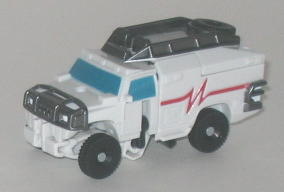
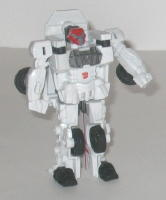
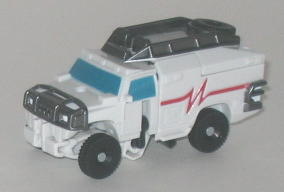
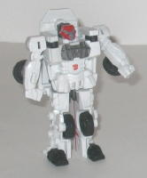
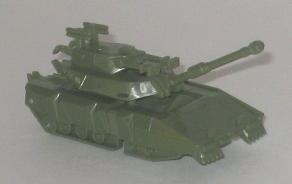
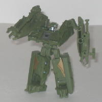

 
Allegiance : Autobot
Size : Legend
Difficulty of Transformation : Very Easy
Color Scheme : White and some black, metallic gunmetal gray, dark gray, red, and moderately light blue
Rating : 5.1
 Rescue
Ratchet vs. Decepticon Brawl {"Allspark Battles" Legends)
Rescue
Ratchet vs. Decepticon Brawl {"Allspark Battles" Legends)
Price
: ~$8 U.S.
Overall Rating
: 6.4
 Rescue
Ratchet
Rescue
Ratchet


Allegiance
: Autobot
Size
: Legend
Difficulty of Transformation
: Very
Easy
Color Scheme
: White and some black,
metallic gunmetal gray, dark gray, red, and moderately light blue
Rating
: 5.1
(NOTE: Because this is a repaint, this is not a full-blown review. This mainly covers any changes made to the mold and the color scheme, and merely compares it to the original Legends class Ratchet toy. For a review on the mold itself, read the review of the origina Legends class Ratchet toy here .)
Based on the mainline
repaint of the
same name
, most of my comments
on mainline Rescue Ratchet's color scheme apply to this toy. The white-and-red
color scheme looks considerably better than the green did on the original
toy-- not just because it's a G1 throwback, but because the contrasts and
colors just look considerably better and more appropriate for an emergency
vehicle. However, I think Legends Rescue Ratchet isn't as much an improvement
over the original colors as mainline Rescue Ratchet is. This is mainly
because Legends Rescue Ratchet could really use some more paint apps--
he's almost all white, and there's not nearly enough paint to break it
up, particularly in robot mode. His only red is on his head (where it looks
awful), and on the "heartbeat" stripes on the sides of his vehicle mode,
which, unlike mainline Rescue Ratchet, are the exact same pattern as on
the original version of this mode. The metallic gunmetal gray is a great
color for the racks on top of the vehicle mode and the robot mode chest,
though, and the black makes a great contrast color against the white in
the places where it is used. The blue used for the windows is also a lighter
shade than on the original Rescue Ratchet, which fits Ratchet's overall
lighter color scheme this time around.
No mold changes have
been made to Rescue Ratchet.
Decepticon
Brawl


Allegiance
: Decepticon
Size
: Legend
Difficulty of Transformation
: Very
Easy
Color Scheme
: Dull military green
and some silver, dark red, and dull metallic gold
Rating
: 7.6
Brawl's tank mode looks
very impressive for such a small scale, with tons of mold detailing all
around and nearly perfect proportions. Treads, his small rear turrets,
"bolts" on his armor plating-- it's all molded in there quite well. His
main gun can move up and down, which is pretty cool at this small scale
as well. Brawl's claws and heels are a little obvious on the rear end of
this mode, but that really isn't a big deal at all. What IS a big deal,
though, is Brawl's complete and utter lack of paint detailing in this mode.
Seriously, there's NONE. It really makes the mode look more boring than
it otherwise would have. C'mon, where's his camo patterns? Also, because
of the transformation, neither of Brawl's turrets can rotate, which is
a bummer.
With no paint apps in
vehicle mode, you'd think Brawl would have several in robot mode-- but
you'd be wrong. He STILL barely has any paint apps, with his face, part
of his chest, and a small part on each leg being the only bits painted,
though the colors do blend well with his military green. However, other
than that my comments on Brawl's robot mode design are generally positive.
His mold detailing is, again, very good, and the way his legs, arms, and
chest are formed out of such a transformation while still making Brawl
look fairly movie-accurate in robot mode is quite impressive. He doesn't
have the shoulder-mounted or arm-mounted weapons, but some sacrifices obviously
have to be made at this scale and those seem like the first logical features
to go. Besides, his main gun sort of "sits inside" his right arm, which
gives him a bit of firepower. His head and especially his upper legs are
rather small proportionally, but other than that I have no problems with
him there. Brawl's articulation is slightly above-average for a Legends
class figure-- he can move at the head, shoulders (at two points), hips,
and side-to-side and the knees.
The Rescue Ratchet vs. Brawl 2-pack is about average as far as most of the Allspark Legends 2-packs go, with the positives primarily being of the strength of Brawl's mold. Both desperately need more paint apps, and Rescue Ratchet still remains a crummy mold, though at least he has a better color scheme this time. Mildly recommended, particularly if you have a thing for tiny Transformers.
Reviews by Beastbot